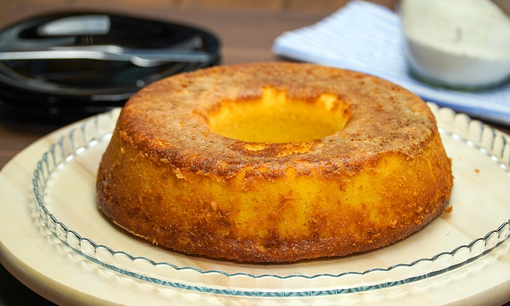
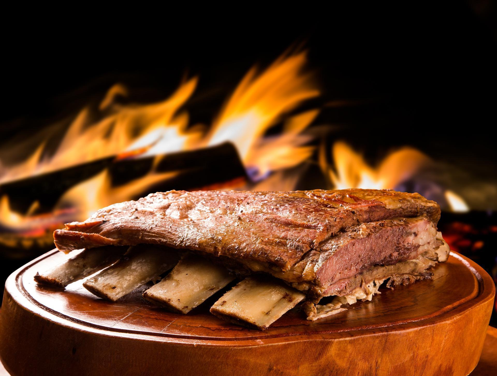
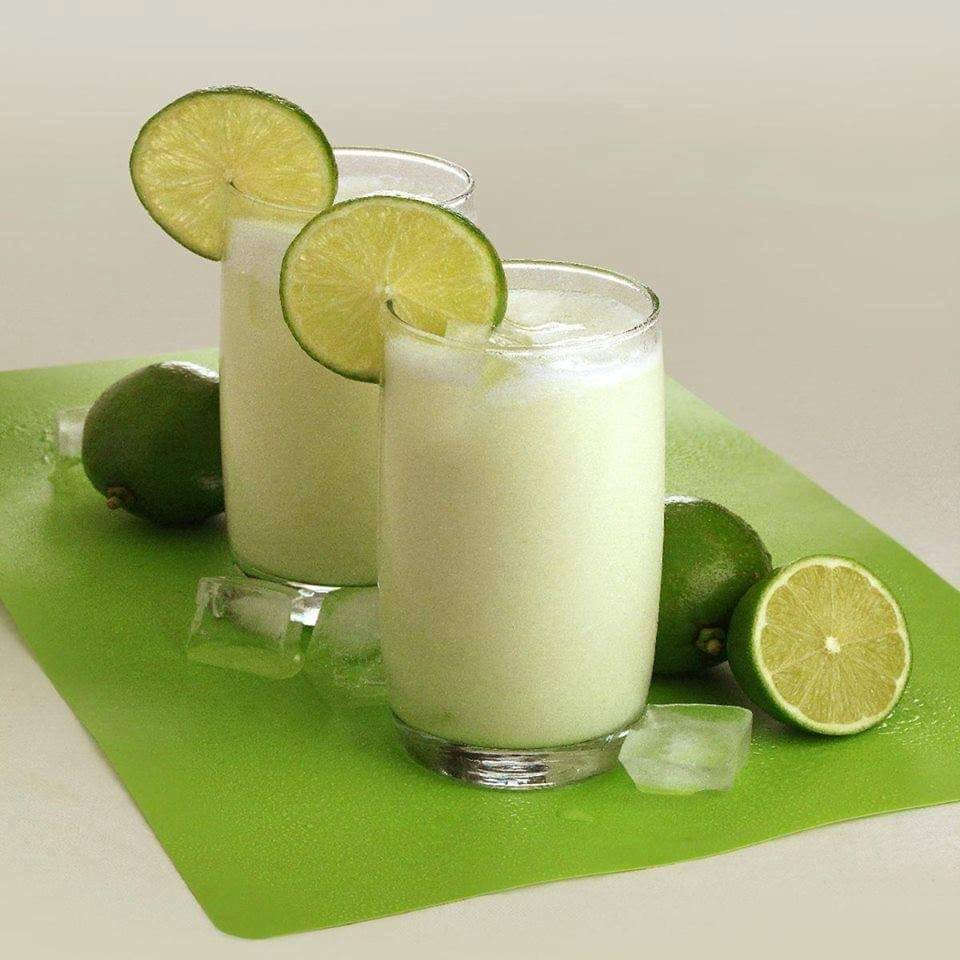

Bolo de Fubá Cremoso
Ingredientes: fubá, açúcar, leite, óleo, ovos.
Modo de Preparo: Misture todos os ingredientes e asse.

Costela Assada no Forno
Ingredientes: costela, alho, sal, pimenta.
Modo de Preparo: Tempere e asse até dourar.

Limonada Suíça
Ingredientes: limão, água, açúcar.
Modo de Preparo: Bata tudo no liquidificador.